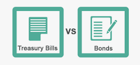

TREASURY BILLS VS TREASURY BONDS
“You need to make big bets when the odds are in your favor -- not big enough to ruin you, but big enough to make a difference.” – Bill Gross
Treasury bills vs bonds
Savings and investments are key to financial prosperity. We have talked about saving while investing or vice verser. In an effort to understand savings, so far, we have discussed money market fund (MMF), and how it differs from banks savings account. We have explored further and discuss government securities; treasurey bills and bonds. Today, we are discussing how treasury bills differs from treasury bonds.
Treasury bills and bonds are both government-backed debt securities. However, there are some major differences between T-bills and T-bonds. Mainly, they vary in when the principal is repaid, which is called the maturity of the security, how the interest is paid, pricing, liquidity, and interest rate risk/ volatility.
The difference between t-bills and bonds
Allow me to introduce you to the main difference of these major government securities. It is also important to note that these securities vary from government to government and thus I will try to disuss mainly for the government of the republic of Kenya and the federal government of United States.
-
Maturity
- Treasury bills offered by the government of Kenya has three main
maturities: 91 days, 182 days and 364 days. The t-bills offered by the federal
government of US are more flexible with six maturities: four weeks, eight weeks, 13
weeks, 17 weeks, 26 weeks and 52 weeks. These flexibilities are key advantage for both offers as
they allows investors to better manage their short-term cash.
On the other hand, the t-bonds offered by the government of Kenya has long term maturity from one year to 30 years. The t-bonds offered by the federal government of US are more more fixed with only two maturities: 20 or 30 years. However, in between, the US government offers Treasury notes with maturities: Two, three, five, seven, or 10 years.
To bypass the lengthy maturities, you can sell bonds before they mature (the same goes for Treasury bills). In fact, this is a common practice, as each investor has unique goals and requirements for their portfolio. When you sell a Treasury bond, it results in a capital gain or loss, thanks to an inverse relationship between the price of a bond and interest rate levels. When interest rates rise, Treasury bond prices generally fall — and vice versa.
For example, suppose you bought a 20-year Treasury bond for $1,000 with a fixed interest rate of 5%. After a year, the interest rate has risen to 7% but now you have a problem if you want to sell. Your bond is less appealing to a buyer since the buyer can now purchase the same type of security for $1,000 and get a higher rate. In order to sell your bond, you'd have to try to offer a competitive yield, therefore you'd have to lower the price of your security below $1,000 so as to push the yield to 7%. As a result, you'd lose out on your principal investment.
When rates are low, it's a great time to sell. Looking at the same 5% bond, if the interest rate fell to 3%, the value of your bond will have increased. You'll have a capital gain if you sell the bond in that instance.
-
Interest Payments/ Coupons
- T-bills do not pay interest. Hence, they're called zero-coupon bonds. Instead,
Treasury bills are auctioned off to investors at a discount to their face value. Your return,
then, is the difference between the face value and the discounted price you initially paid.
Suppose you buy a Treasury bill with a Kes 100,000 face value for Kes 95,000. At maturity, you will be paid Kes 100,000. The Kes 5,000 difference between the Kes 95,000 purchase price and the Kes 100,000 face value is considered the interest.
Once you buy T-bonds, you get a fixed-interest payment called the coupon every six months. The coupon amount is given as a percentage of the bond's face value. For example, a bond worth Kes 500,000 with a coupon rate of 10% would pay Kes 50,000 in interest each year.
At maturity, you're paid the bond's face value. When you redeem bonds at maturity, the proceeds are deposited automatically into the bank account. Compared with Treasury bills, Treasury bonds usually pay the highest interest rates because investors want more money to put aside for the longer term. For the same reason, their prices, when issued, go up and down more than the others.
-
Pricing
- T-bills are issued at a discount from the par value. A Kes 100,000 bill might cost the
investor Kes 95,000. When the bill matures, the investor is paid the face value — par value — of
the bill they bought. Since the face value exceeds the purchase price, the difference is the
interest earned for the investor.
If you buy a bond at issuance, the bond price is the face value of the bond, and the yield will match the coupon rate of the bond. That is, if you buy a bond that pays 1% interest for three years, that's exactly what you'll get. When the bond matures, its face value will be returned to you. Its value at any time in between is of no interest to you unless you want to sell it. The bond is priced either at discount, par, or premium. Let's look at each briefly.
A bond's shilling price represents a percentage of the bond's principal balance, otherwise known as par value. A bond is simply a loan, after all, and the principal balance, or par value, is the loan amount. So, if a bond is quoted at Kes 98.90 and you were to buy a Kes 10,000,000 twenty-year Treasury bond (Treasury note), you would pay Kes 9,800,900.
In the example above, the two-year Treasury is trading at a discount. This means it is trading at less than its par value. If it were "trading at par," its price would be 100. If it were trading at a premium, its price would be greater than 100. Trading at a discount means the price of the bond has declined since it was issued; it is now cheaper to buy the bond than when it was issued.
-
Liquidity
- T-bills are more liquid compared to t-bond which is a long-term investment.
However, you can sell both t-bills or t-bonds in the secondary market. After a waiting period of around 45 days, you can sell the bond to the bond to the secondary marker. The sales can make profit or loss depending on the changes in the interest rates and inflation. It is unlikely to get the face value if you sell it before maturity, so you could see a loss between what you paid initially and what you get selling it.
-
Volatility
- T-bills are not volatile. While treasury bills are very volitile. This is what we
mean.
Imagine you have purchased a bond at 1% for three years. Then, six months after your purchase, the same bond issues another public offering. However, this bond is now offering 2% interest. You've already locked into your rate, but surely this change in interest rates will impact the value of your bond? In secondary markets, bonds may be sold for a premium or discount on their face value. Therefore, although you might've paid Kes 100,000 for your bond when it was issued, the same bond may now be worth Kes 98,000 or Kes 102,000, depending on external factors like prevailing interest rates.
Conclusion
T-bills and bonds are great avenues for short term and long term investments. They are safe and convinient ways to stash away the money you do not currently require to avoid the temptation of using it for an unintended purposes. Allow me to conclude with the sayings from Bill Gross, "Finding the best person or the best organization to invest your money is one of the most important financial decisions you'll ever make!" Thank you for reading!
Disclaimar
While care is taken to update the information, products and services on this column and our other related websites, there may be inadvertent inaccuracies or typographical errors or delays in updating the information. The material contained in this site and related pages, is for refernce and general information purpose and the details mentioned in the respective of products and services document shall prevail in case of any inconsistency. Subscribers and users should seek professional advice before acting on the basis of information contained herein. Please take an informed decision with respect to any product or services after going through the relevant product/ service document and applicable terms and conditions.
About the Author
Galm Dida - Credit and Investment Coach (KCB - Isiolo) - I am passionate of financial independence for youth and women in marginalized regions. Currently supporting over 15 women and youth groups around Isiolo in the matters of savings and investment. Join us as we inspire the community in financial success.
Contact
Tell: 0741370493 || email: Send me an email || whatsapp: WhatsApp Me
Quick links
Learn more about money market fund (MMF)
Learn the difference between savings accounts and MMF
Learn how and where to save money